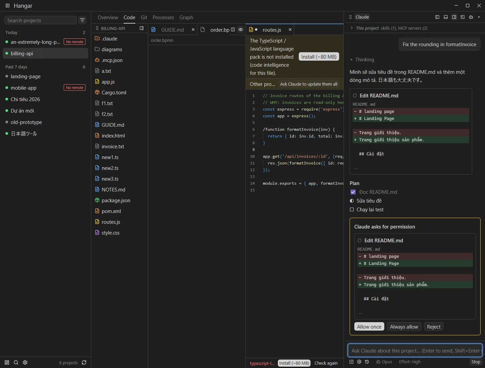

Windows
Windows 10 or 11, 64-bit
Download installer (.exe) MSI packageNot signed yet: if SmartScreen stops it, choose More info, then Run anyway.
Hangar scans your project folders and tells you which ones you are working on, which ones went cold, and which ones hold work that was never committed or pushed. Open any of them and the editor, Git, terminals and Claude Code are already there.
Free for Windows, macOS and Linux. Your code stays on your machine.
| Project | Status | Branch | Unpushed | Last seen |
|---|---|---|---|---|
| billing-api | Flying | main | 2 | 5h ago |
| landing-page | Cold | main | - | 41d ago |
| mobile-app | Unpushed | dev | 7 | 9d ago |
| old-prototype | No remote | master | - | 320d ago |
| scraper | Parked | main | - | 2d ago |
Written in Rust with GPUI. Opens in under a second, idles at about 55 MB of memory, and never uploads your code anywhere.
From the board to a code map of your linked projects: know what a change will break before you make it, find out who holds your port, and let Claude Code do the edit while you approve each change.
Nobody closes a side project on purpose. It just stops getting opened, and whatever was in flight stays where you left it. Hangar notices these before they cost you anything.
Seven commits on a branch you never pushed, on a laptop you are about to replace.
A prototype with real work in it and no remote at all.
A dev server from last month still holding port 3000.
Six gigabytes of `node_modules` and `target` in projects you stopped touching.
Add the folders that hold your projects. Hangar finds every repository and package up to four levels down, and nothing inside them leaves your computer.
Each project is flying, parked or archived. Flying projects untouched for 14 days turn cold, and work that is not backed up gets flagged.
The editor, Git, terminals, running processes and Claude Code open in that folder, with your tabs where you left them.
The tools you would otherwise open five apps for. Hangar starts them only for the project in front of you and stops them when you leave.

Branch, unpushed work, last session. Ask "What was I doing?"
Editor with language servers for 12 languages, previews and split views.
Stage hunks, commit, pull, push, resolve conflicts. Never force-pushes.
What runs here, on which port, and who holds the port you need.
Who calls what, across linked projects, and what a change will break.
Latest version: v1.6.0. All releases and checksums
Windows 10 or 11, 64-bit
Download installer (.exe) MSI packageNot signed yet: if SmartScreen stops it, choose More info, then Run anyway.
macOS 12 or later
Apple silicon (.dmg) Intel Mac (.dmg)Not notarized yet: the first time macOS blocks Hangar, open System Settings › Privacy & Security and choose Open Anyway.
x86-64, X11 or Wayland
AppImage Debian / Ubuntu (.deb)Make the AppImage executable (`chmod +x`) and run it.
The same project scan in your terminal, as `hangar`. Prebuilt for each system on the releases page.
Install Claude Code and sign in. The chat panel also needs Node.js and the ACP adapter. The guide walks through it.
npm install -g @agentclientprotocol/claude-agent-acp